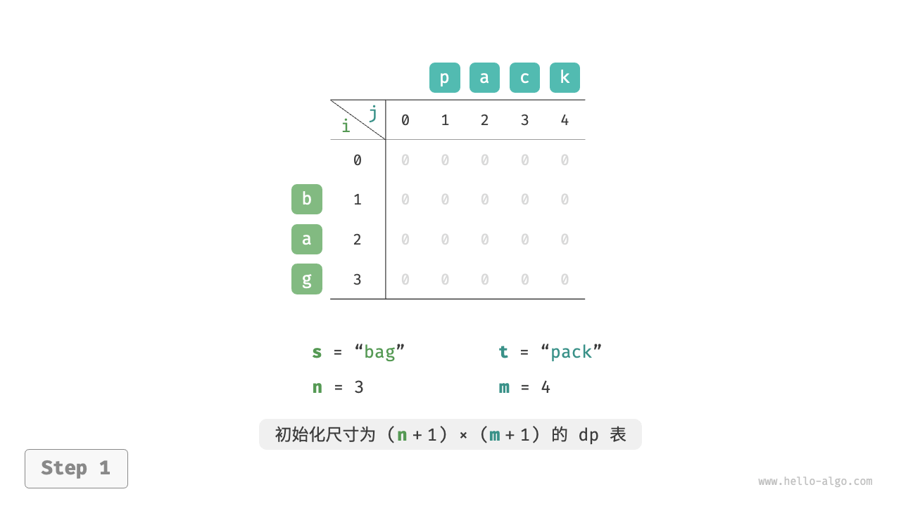
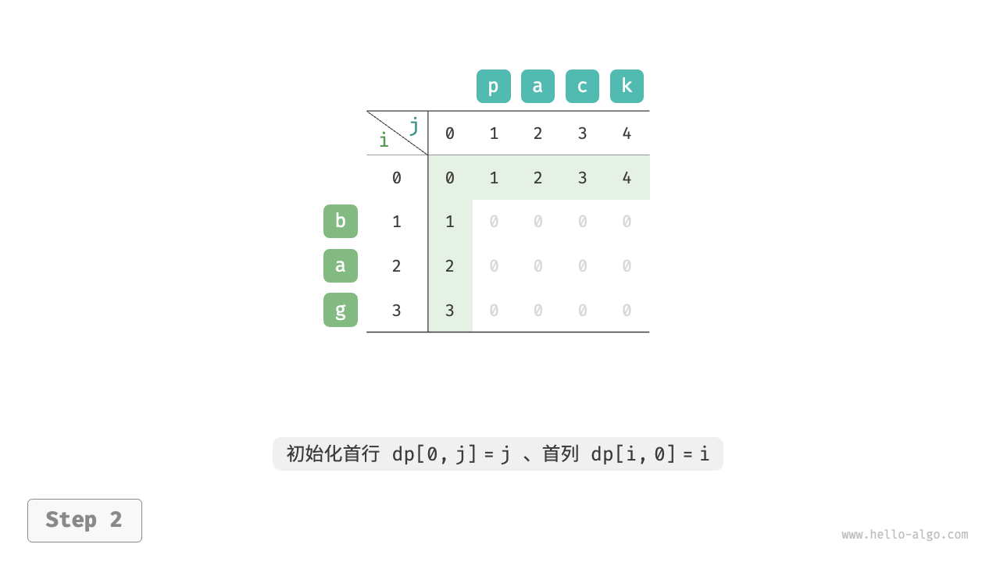
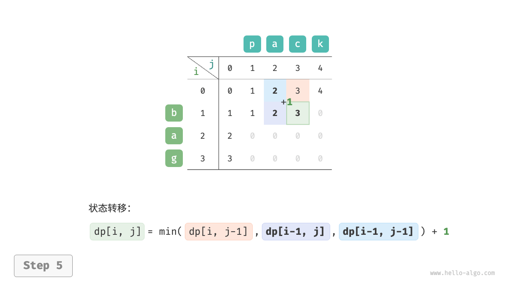
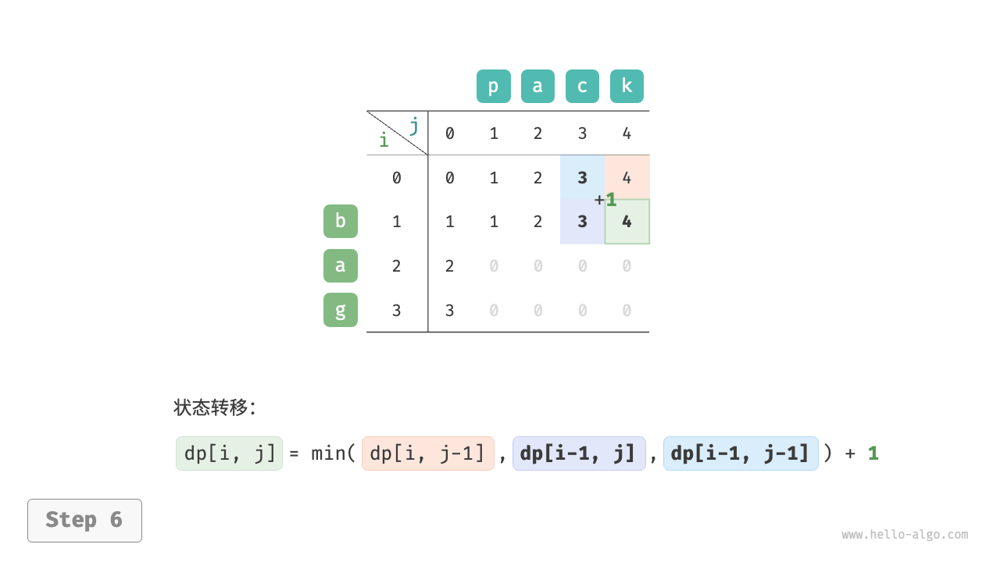
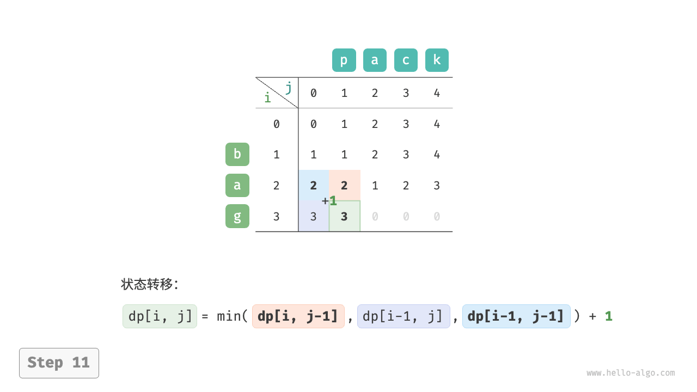
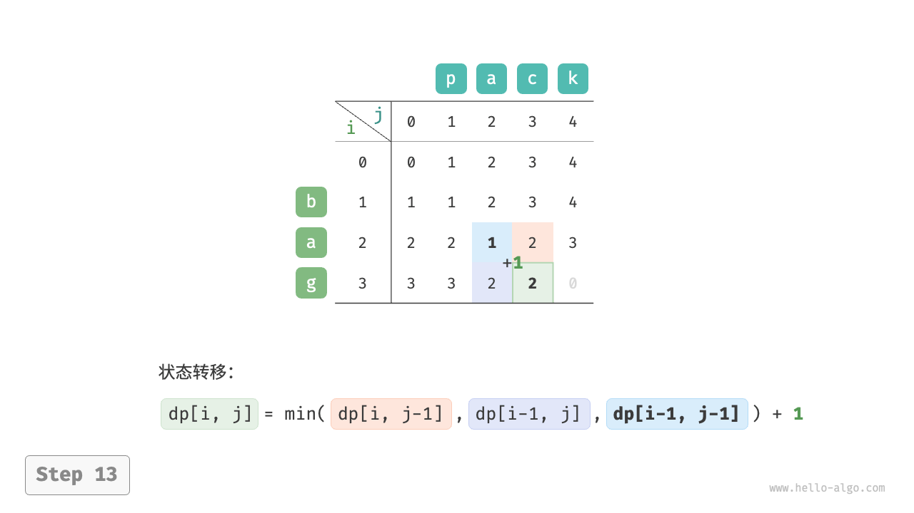
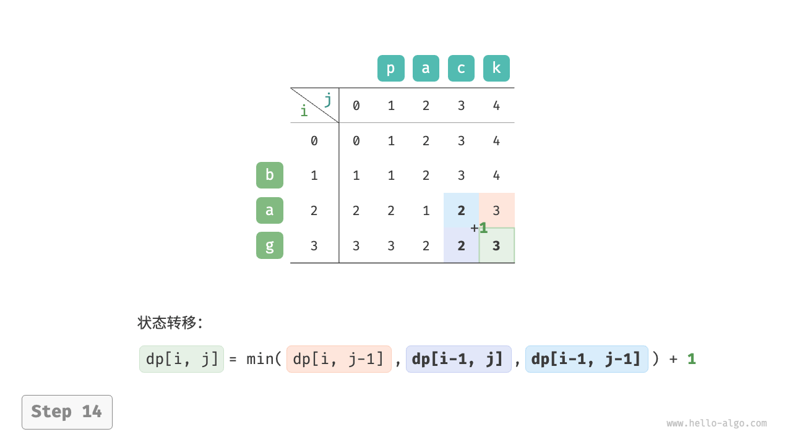
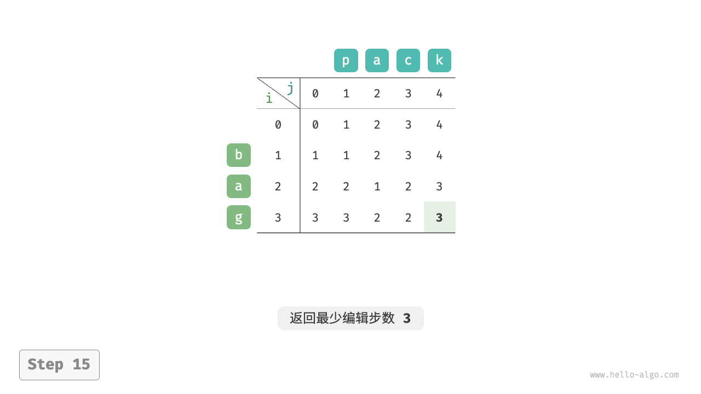

编辑距离问题¶
编辑距离，也称 Levenshtein 距离，指两个字符串之间互相转换的最少修改次数，通常用于在信息检索和自然语言处理中度量两个序列的相似度。
Question
输入两个字符串 $s$ 和 $t$ ，返回将 $s$ 转换为 $t$ 所需的最少编辑步数。
你可以在一个字符串中进行三种编辑操作：插入一个字符、删除一个字符、将字符替换为任意一个字符。
如下图所示，将 kitten 转换为 sitting 需要编辑 3 步，包括 2 次替换操作与 1 次添加操作；将 hello 转换为 algo 需要 3 步，包括 2 次替换操作和 1 次删除操作。

编辑距离问题可以很自然地用决策树模型来解释。字符串对应树节点，一轮决策（一次编辑操作）对应树的一条边。
如下图所示，在不限制操作的情况下，每个节点都可以派生出许多条边，每条边对应一种操作，这意味着从 hello 转换到 algo 有许多种可能的路径。
从决策树的角度看，本题的目标是求解节点 hello 和节点 algo 之间的最短路径。
{kind=link}
动态规划思路¶
第一步：思考每轮的决策，定义状态，从而得到 $dp$ 表
每一轮的决策是对字符串 $s$ 进行一次编辑操作。
我们希望在编辑操作的过程中，问题的规模逐渐缩小，这样才能构建子问题。设字符串 $s$ 和 $t$ 的长度分别为 $n$ 和 $m$ ，我们先考虑两字符串尾部的字符 $s[n-1]$ 和 $t[m-1]$ 。
- 若 $s[n-1]$ 和 $t[m-1]$ 相同，我们可以跳过它们，直接考虑 $s[n-2]$ 和 $t[m-2]$ 。
- 若 $s[n-1]$ 和 $t[m-1]$ 不同，我们需要对 $s$ 进行一次编辑（插入、删除、替换），使得两字符串尾部的字符相同，从而可以跳过它们，考虑规模更小的问题。
也就是说，我们在字符串 $s$ 中进行的每一轮决策（编辑操作），都会使得 $s$ 和 $t$ 中剩余的待匹配字符发生变化。因此，状态为当前在 $s$ 和 $t$ 中考虑的第 $i$ 和第 $j$ 个字符，记为 $[i, j]$ 。
状态 $[i, j]$ 对应的子问题：将 $s$ 的前 $i$ 个字符更改为 $t$ 的前 $j$ 个字符所需的最少编辑步数。
至此，得到一个尺寸为 $(i+1) \times (j+1)$ 的二维 $dp$ 表。
第二步：找出最优子结构，进而推导出状态转移方程
考虑子问题 $dp[i, j]$ ，其对应的两个字符串的尾部字符为 $s[i-1]$ 和 $t[j-1]$ ，可根据不同编辑操作分为下图所示的三种情况。
- 在 $s[i-1]$ 之后添加 $t[j-1]$ ，则剩余子问题 $dp[i, j-1]$ 。
- 删除 $s[i-1]$ ，则剩余子问题 $dp[i-1, j]$ 。
- 将 $s[i-1]$ 替换为 $t[j-1]$ ，则剩余子问题 $dp[i-1, j-1]$ 。
{kind=link}
根据以上分析，可得最优子结构：$dp[i, j]$ 的最少编辑步数等于 $dp[i, j-1]$、$dp[i-1, j]$、$dp[i-1, j-1]$ 三者中的最少编辑步数，再加上本次的编辑步数 $1$ 。对应的状态转移方程为：
$$ dp[i, j] = \min(dp[i, j-1], dp[i-1, j], dp[i-1, j-1]) + 1 $$
请注意，当 $s[i-1]$ 和 $t[j-1]$ 相同时，无须编辑当前字符，这种情况下的状态转移方程为：
$$ dp[i, j] = dp[i-1, j-1] $$
第三步：确定边界条件和状态转移顺序
当两字符串都为空时，编辑步数为 $0$ ，即 $dp[0, 0] = 0$ 。当 $s$ 为空但 $t$ 不为空时，最少编辑步数等于 $t$ 的长度，即首行 $dp[0, j] = j$ 。当 $s$ 不为空但 $t$ 为空时，最少编辑步数等于 $s$ 的长度，即首列 $dp[i, 0] = i$ 。
观察状态转移方程，解 $dp[i, j]$ 依赖左方、上方、左上方的解，因此通过两层循环正序遍历整个 $dp$ 表即可。
代码实现¶
[file]{edit_distance}-[class]{}-[func]{edit_distance_dp}
如下图所示，编辑距离问题的状态转移过程与背包问题非常类似，都可以看作填写一个二维网格的过程。
=== "<1>" 
{kind=link}
=== "<2>" 
{kind=link}
=== "<3>"

=== "<4>"

=== "<5>" 
{kind=link}
=== "<6>" 
{kind=link}
=== "<7>"

=== "<8>"

=== "<9>"

=== "<10>"

=== "<11>" 
{kind=link}
=== "<12>"

=== "<13>" 
{kind=link}
=== "<14>" 
{kind=link}
=== "<15>" 
{kind=link}
空间优化¶
由于 $dp[i,j]$ 是由上方 $dp[i-1, j]$、左方 $dp[i, j-1]$、左上方 $dp[i-1, j-1]$ 转移而来的，而正序遍历会丢失左上方 $dp[i-1, j-1]$ ，倒序遍历无法提前构建 $dp[i, j-1]$ ，因此两种遍历顺序都不可取。
为此，我们可以使用一个变量 leftup 来暂存左上方的解 $dp[i-1, j-1]$ ，从而只需考虑左方和上方的解。此时的情况与完全背包问题相同，可使用正序遍历。代码如下所示：
[file]{edit_distance}-[class]{}-[func]{edit_distance_dp_comp}